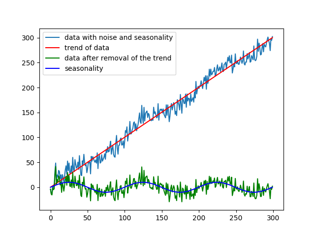

Trend Identification and Estimation in Time-Series Data
Student(s): Grillo, A., Hanrieder, M., Mauranen, H., Mikos, M., Wiezorek, J.
Supervisor(s): Bonizzi, P.
Semester: 2018-2019
Background
This project should help to analyse time-series data, which is a special type of data with a time-value, such as seconds or timestamp, as x-value and any observed value as y-value.
For example the y-value can be a measured value like temperature or e.g. stock exchange data.
In a mathematical sense, data has several components.
One component is the so-called noise, which describes, among other, random events or measurement errors.
Another component is the Season component, for example for weather data, the different season, so in general the season component describe repetitive behaviour during the observation. Furthermore,
data can contain a trend, which describe how the data will develop beyond the measuring period.
In Fig. 1 a synthetic time-series data was generated with these three different components, a trend, random noise and seasonality.

Fig 1. - How a trend can affect the interpretation
Problem statement and motivation:
???.
Fig 2. - ???.
Fig 3. - ???.
Research questions/hypotheses:
What are the best and most versatile approaches for trend identification and estimation in time series data?
What are the strengths and weak points of the different methods tested?
Is it possible to automatically select the best approach(es) for trend identification and estimation, based on the (statistical/frequency/etc.) properties of a time series and the specific problem domain and application?
Main outcomes:
Comparisation of strengths and weeknesses of different methods for trend detection and estimation
???.
References:
Kitano, H., Asada, M., Kuniyoshi, Y., Noda, I., & Osawa, E. (1997). Robocup: the robot world cup initiative. Proceedings of the first international conference on Autonomous agents, 340-347.